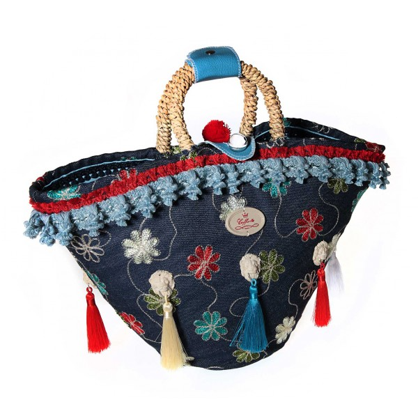
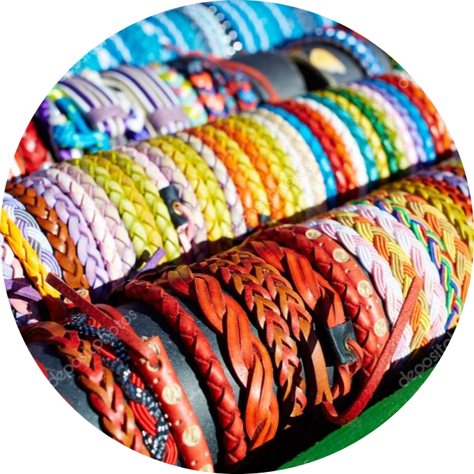
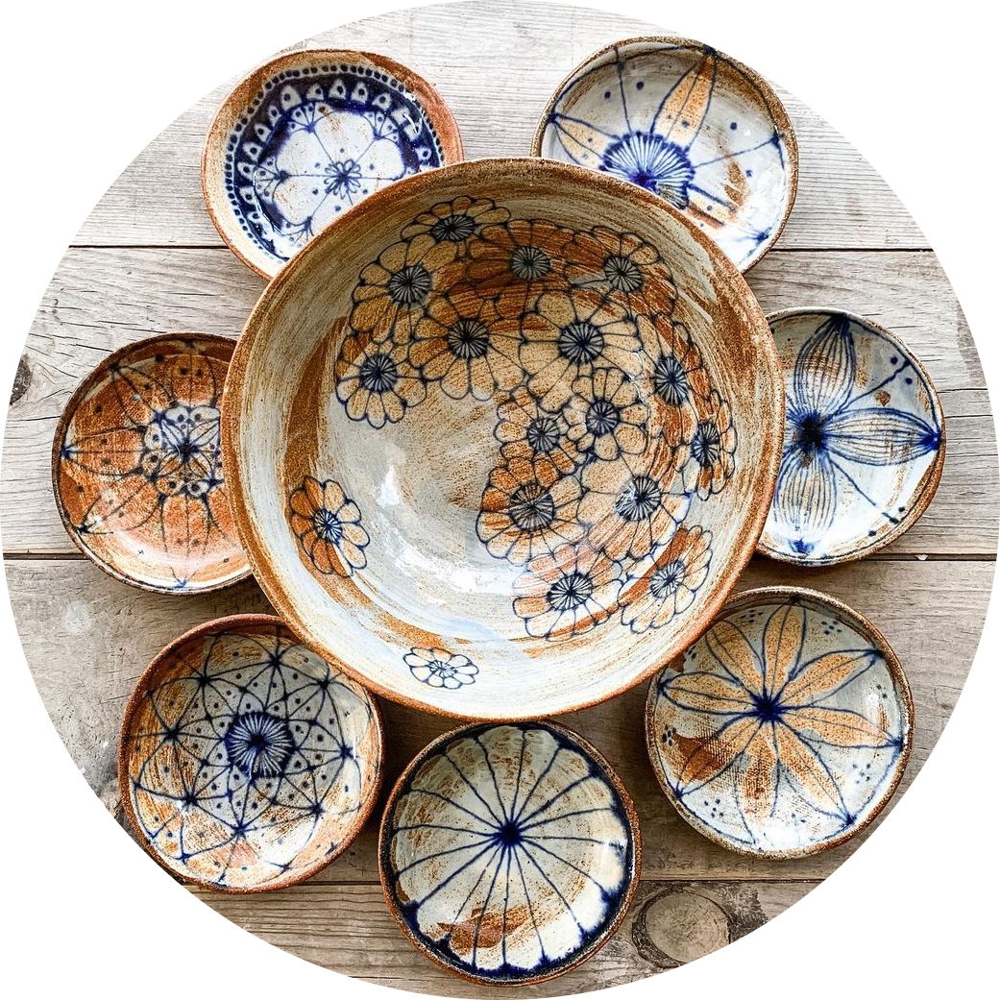

ABOUT OUR BUSINESS
Since hand-made products have become very trendy, moreover, they are also eco-friendly, we think that this part will also serve as a message to convey. The products that are offered are made by women from every city of Albania, as some deep areas due to the impossibility, give a good hand in the economy, or many women who are part of different associations/organizations because they know how to make such products. The business will be supported by various non-profit organizations that deal with women's rights in Albania and do not have employment opportunities.
The message is to give a different opportunity to people, especially women, who cannot live a normal life because of conditions that do not favor them and introduce the concept of environmental protection, because hand-made products are also made in such a way with products that are recycled and are eco-friendly. We also have the concept of reusable materials because these products are created under artisanal conditions and to reach for a good result, many things must be combined at the same time, and thus it is not necessarily useful to use things that are consumed for such time.
THE MENU
Artisan Crafted Earrings with Sterling Silver and Gold Plate
These earrings that captivate with both, a sense of contrast and of equilibrium. Featuring hammered textured, the layered earrings are crafted by hand with 24k gold plated brass, oxidized and matte sterling silver.
Price: €29.90
Handmade Bag
Cotton Blend Tote Bag.Woven with an eye-catching patchwork motif, this bag is one accessory you won't mind toting around. Handcrafted from a cotton-nylon blend, the bag features a geometric motif, leather and cotton shoulder straps, and a zippered closure.
Price: €14.90
Handmade Carpet

Handwoven Multicolor Wool Rug
The dazzling rugs are woven by hand on a traditional loom and takes its beautiful hues from natural dye.
Price: €39.90
Handmade Bracelet
 Colorful Bracelet from Polypropylene Cords
Colorful bracelets for both women and men, hand-woven from sturdy polypropylene cords. The bracelets close with brass snaps .
Price: €4.90
Handmade Bowl
Hand-Painted Ceramic bowl
Crafted from ceramic in the shape of a bowl, this bowl is perfect for simple decor or for display.
Price: €14.90